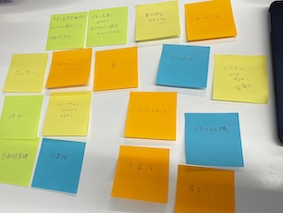
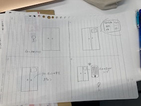

Iotとは"internet of Thngs"の略称で、モノのインターネットと訳されます。
その名の通りものがインターネット経由で通信することを意味します
インターネットはそれまでは、コンピュータ同士を接続するためのものでしたが、
現在では、モノとコンピュータの接続が日常的に行われています。
身近な例で言うと、スマートフォンとの接続です。
他にもスマートスピーカーやBluetoothイヤホンとの接続がその例です。
まさにこれらのものが、Iotの応用例です。
どんなところにIotを活用させてみたい？
クローゼットの中の服でその日の天気に合わせたコーディネートを行なってくれる
登録しているスマホが家の近くに来たら勝手に会場し、離れたら施錠してくれる


前のページへ戻る